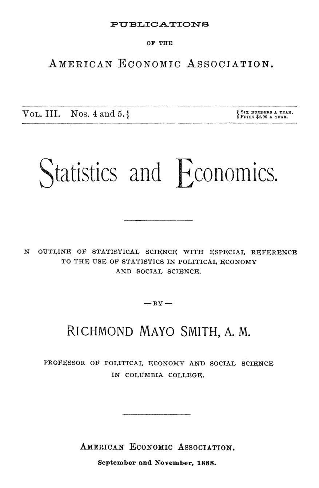

Medir em vez de descrever: Mayo Smith e a estatística como ciência
Leitura: 8 min
Em 1888, Richmond Mayo Smith mostrou o que a estatística revela sobre imigração, casamento, riqueza e crime — e por que a regularidade dos números não tira a liberdade de ninguém.


Em 1888, os trens elevados de Nova York transportavam 150 milhões de passageiros por ano. Dividido pela população, dava uma média de cem viagens por habitante. Richmond Mayo Smith, professor de economia política e ciência social no Columbia College, guarda esse número para a última página de sua monografia — e o usa para dizer o que a estatística não autoriza: que a média obrigue alguém a embarcar.
A monografia ocupa uma edição dupla das publicações da American Economic Association e segue de perto o livro do alemão Georg Mayr. O objetivo é apresentar a estatística não como mera informação, mas como peça na construção de uma ciência social.
O que os números dizem que as palavras não dizem?
Mayo Smith distingue três métodos de que as ciências sociais dispõem: o histórico, o comparativo e o estatístico. Os dois primeiros produzem enunciados qualitativos. O terceiro mede. A história registra que a população de um país cresceu; a estatística conta os habitantes. A história observa que uma fome retardou o crescimento; a estatística mostra quanto.
“Eles nos dão descrições gerais em palavras; a estatística nos dá descrições exatas em números.” (They give us general descriptions in words; statistics give us exact descriptions in figures.)
O autor separa três tipos de conhecimento estatístico. A enumeração simples, como o censo. As regularidades invisíveis à observação casual, como o excesso constante de meninos ao nascer: de 102 a 106 para cada 100 meninas na Europa. E as causas, como quando o preço do trigo e o número de casamentos variam em sentido inverso.
A cautela começa pela própria contagem. As estimativas da população da Terra reunidas por Levasseur iam de 437 milhões (Volney, 1804) a 1,85 bilhão (Behm, 1866). Para a África, dependia-se de viajantes que só viam as margens dos rios navegáveis, onde a população é mais densa.
Quem eram os americanos em 1880?
O censo de 1880 tratava de um fenômeno que a Europa não tinha: uma nação feita de imigrantes. Mayo Smith estima que os descendentes dos brancos de 1790 somavam cerca de 25 milhões, mais ou menos metade da população. Em certo sentido, admite, todos ali descendiam de imigrantes.
O autor desmonta uma leitura apressada. A fatia de estrangeiros caiu entre 1870 e 1880, e havia quem visse aí perda de força do elemento estrangeiro. Erro: os filhos de imigrantes nascidos no país contam como nativos. Desde 1820, haviam chegado mais de 14 milhões de pessoas.
Nem o fluxo se media com precisão. Em 1880, 21.251 alemães tinham licença para emigrar aos Estados Unidos; 134.040 desembarcaram em portos americanos.
A outra grande transformação era a cidade. Em 1790, só 3,3% dos americanos viviam em cidades de 8 mil habitantes ou mais; em 1880, eram 22,5%. As ferrovias, argumenta o autor, concentram os negócios e favorecem as grandes cidades à custa das pequenas.
No sentido inverso estava a Irlanda, exceção entre as nações civilizadas: sua população caiu de 8.175.124 em 1841 para 5.159.839 em 1881, por causa da emigração.
Quanto valia quem partia? Engel estimou em 754 táleres o custo de criar uma criança alemã até os quinze anos. Mayo Smith chama de falaciosa a conta que toma esse custo como valor do imigrante: ele vale o que vai produzir no novo país, menos o que custará mantê-lo. Por esse critério, William Farr avaliou em £ 175 cada emigrante inglês de 1876.
A riqueza das nações também virava número. Robert Giffen, a partir do imposto de renda, calculou a riqueza geradora de renda da Grã-Bretanha em cerca de £ 8,5 bilhões em 1875, quase 40% acima de 1865. A riqueza crescia a 4% ao ano; a população, a cerca de 1%.
O casamento obedece à economia?
Casar é, no caso individual, uma escolha. No agregado, parece lei natural. Na Baviera, nos anos prósperos de 1840 a 1845, os casamentos anuais ficaram todos perto de 29,4 mil, entre 29.356 e 29.500. O autor não esconde o espanto.
Quando as condições mudaram, o número mudou. No ano ruim de 1846-47, caiu para 28.331. Com a abolição das leis que restringiam o casamento, em 1869, chegou perto de 60 mil. A guerra franco-alemã o derrubou para 40.707 em 1871; a paz o devolveu a 52.045.
As mesmas leis explicam outro dado. A ilegitimidade, tida como indicador de moralidade, refletia em boa parte a legislação: na Baviera, os nascimentos fora do casamento caíram de 22,47% do total em 1865 para 16,47% em 1877, à medida que as restrições caíam.
A Baviera fornece também o exemplo mais sombrio de causalidade. Em alguns de seus condados, quatro em cada dez crianças morriam no primeiro ano de vida, justamente onde as mães trabalhavam no campo ou na fábrica e alimentavam os filhos artificialmente.
Na estatística econômica, adverte o autor, o método decide tudo: se estiver errado, os números são piores que inúteis. Os orçamentos operários de Massachusetts são o exemplo de método bem aplicado.
Se o crime é regular, onde fica a liberdade?
Na Inglaterra, as infrações graves levadas a julgamento variaram pouco em duas décadas, de 2,72 por mil habitantes em 1857-61 para 2,06 em 1879-80. Dos condenados, 40% eram reincidentes. As penas, conclui o autor, parecem ter pouco efeito dissuasório.
Números assim inclinam a tratar o crime mais como doença do corpo social do que como pecado do indivíduo. Quetelet, às vezes chamado de pai da estatística moderna, levou a ideia ao limite ao falar de um orçamento pago com mais regularidade que o de qualquer ministro das finanças:
“O orçamento da prisão, das galés e do cadafalso.” (the budget of the prison, the gallies and the scaffold)
Mayo Smith recusa o fatalismo. As regularidades se desfazem quando se muda de país ou de período; apontam causas parecidas, não lei imutável. E o próprio Quetelet completava a frase de um modo raramente citado: se mudarmos as causas, mudaremos necessariamente os efeitos.
Daí o retorno aos trens de Nova York. A média de cem viagens por habitante não obriga ninguém: o autor pode nunca embarcar, ou embarcar todos os dias.
“A lei da massa não tem, em si, nenhum poder sobre o indivíduo.” (The law of the mass has in itself no power over the individual.)
Resta saber se tudo isso é método ou ciência. A visão inglesa tratava a estatística como instrumento, comparável ao microscópio; a continental, de Mayr e Engel, como ramo da ciência social. Mayo Smith fica com os continentais: o estatístico precisa ser sociólogo o bastante para entender o problema, e o sociólogo, estatístico o bastante para não formular leis que não existem.
Na minha leitura
Na minha leitura, a monografia antecipa o problema central da avaliação de políticas públicas: distinguir regularidade de causalidade. A fatia de estrangeiros mal lida e a ilegitimidade atribuída à moral quando vinha da lei são casos em que o número certo, mal interpretado, conta a história errada. Volume de dados não corrige heterogeneidade.
A resposta sobre a liberdade também me parece atual. A estatística não descreve destinos; descreve condições. Se o número de casamentos responde ao preço do trigo e à lei, a política tem onde atuar. É a frase esquecida de Quetelet, e não a famosa, que justifica o trabalho do economista.
Glossário
- Por mil (pro mille)
- Forma de expressar taxas de nascimentos, mortes, casamentos ou emigração em relação a cada mil habitantes.
- Enumeração
- Contagem direta, como o censo; para o autor, o tipo mais simples de conhecimento estatístico.
- Riqueza geradora de renda
- Parte da riqueza nacional que produz rendimento, estimada por Giffen a partir do imposto de renda britânico.
- Orçamento operário
- Levantamento dos gastos de famílias trabalhadoras por item (comida, roupa, moradia), usado para medir o custo de vida.
- Necessitarismo
- Premissa de que causas semelhantes produzem efeitos semelhantes; para Mayo Smith, base de toda estatística social.
Fontes
- Statistics and Economics (pp. 7–127). JSTOR · Internet Archive (PDF)
- Sumário da edição no JSTOR: Publications of the American Economic Association, vol. 3, nº 4/5.
Documento em domínio público (EUA, publicado antes de 1931), via JSTOR Early Journal Content e Internet Archive. Resumo e comentário do autor deste site, sem afiliação com a American Economic Association. Encontrou um erro? Escreva: a correção é publicada no próprio texto, com data.
← Nº 14 · Salário, greve e armazém da mina: o trabalho visto em 1888 Nº 16 · Por que os preços deixaram de ficar parados →